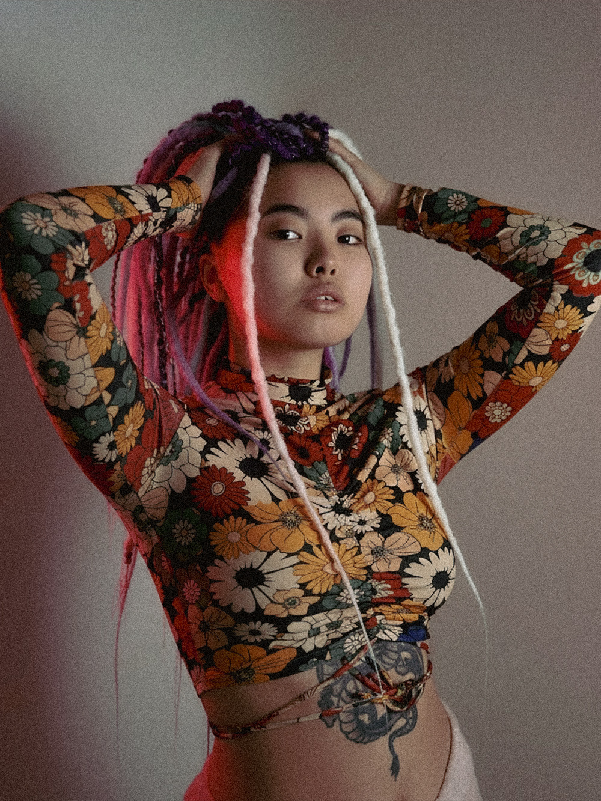
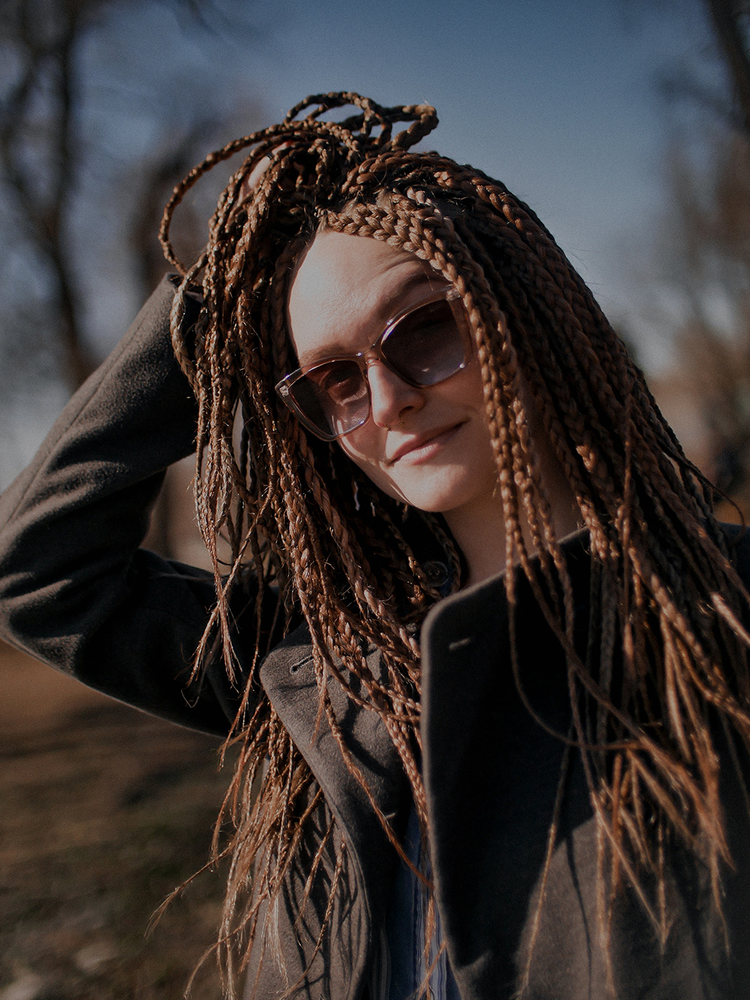
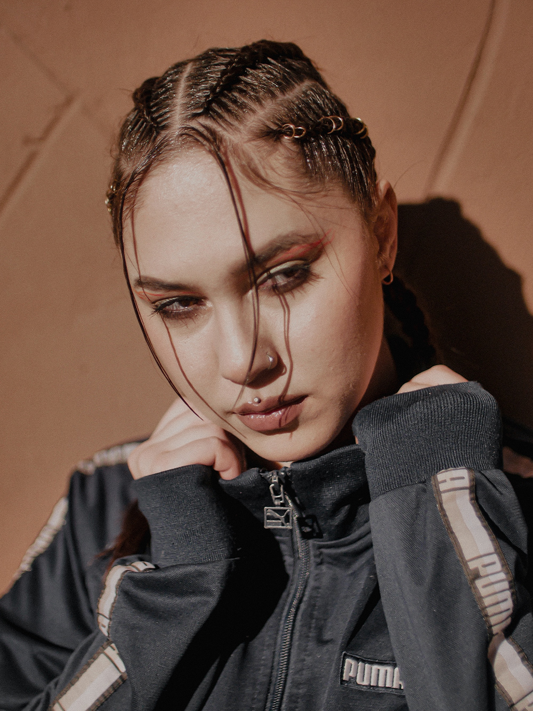
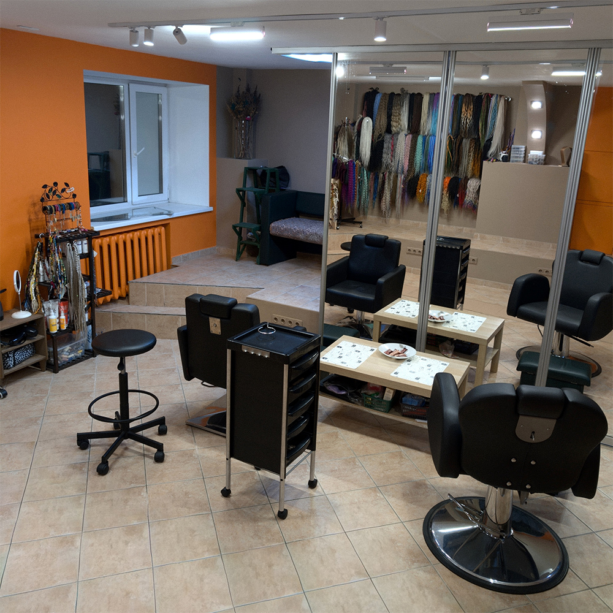
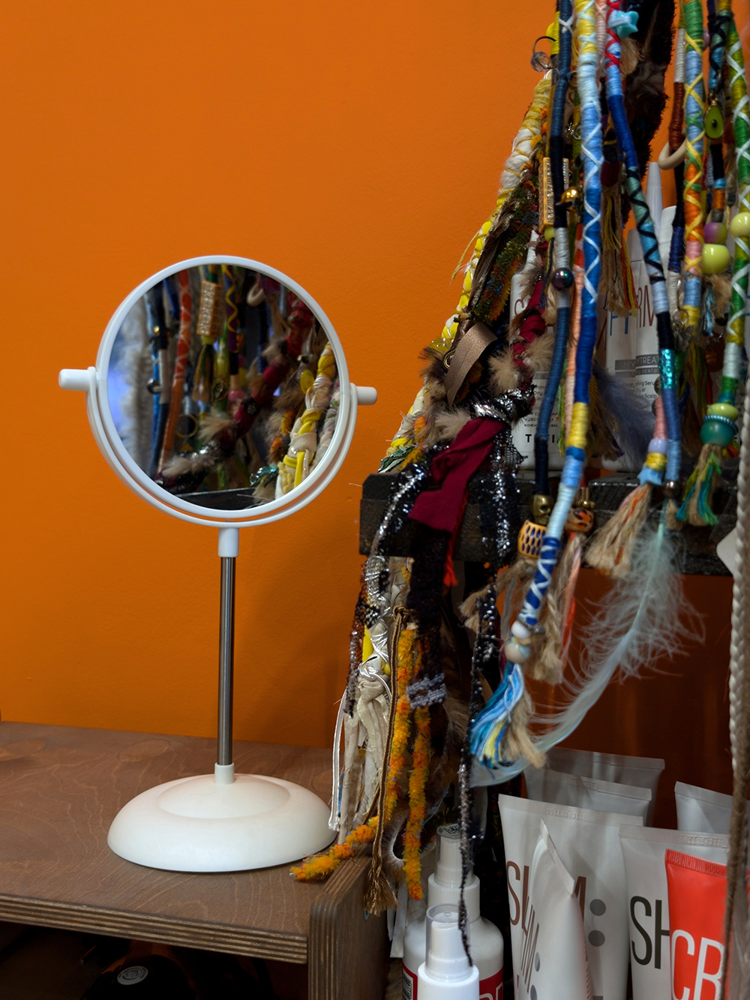
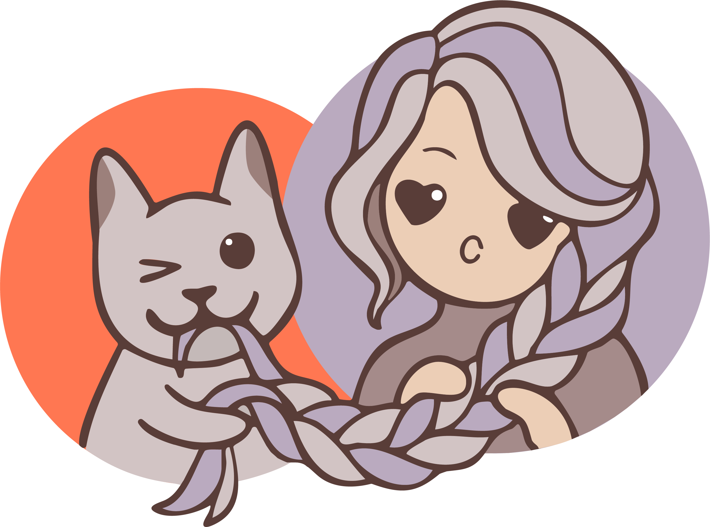

Тем, кто ценит время
Косы и дреды не требуют ежедневного ухода. Проснулась и уже красивая!
Делаем потрясающие прически с 2017 года.
Девять лет опыта, работа в четыре руки, уютная студия и по-настоящему индивидуальный подход
Мы предлагаем широкий спектр услуг по плетению и уходу за заплетенными волосами

Косы и дреды не требуют ежедневного ухода. Проснулась и уже красивая!

100% уверенности в своей причёске, так как её не испортят дождь, ветер или физическая активность. Да, выглядеть великолепно в любой ситуации — это реально

Заплести дреды или косы — это отличный способ заявить о себе, своих принципах и желаниях. Они дополнят уже созданный образ, а также помогут сделать шаг к изменению имиджа
Изготавливаем самые разнообразные комплекты.
В наличии более 30 готовых к заплетению вариантов на любой вкус и стиль
С ними — идеально. Не тяжело, не жарко, не тянет, не чешется, спать не мешают — при условии, что всё сделано правильно.
Все заботы о причёске исчезают на целых 6 недель!
Моем 1 раз в 7–10 дней специальной пенкой для мытья заплетенных волос или разбавленным шампунем. Подробную инструкцию по уходу расскажем дважды — при консультации и во время плетения.
К сожалению, в комплекте с косами их не будет. Если серьезно, то педикулёз — это контактное заболевание. Насекомые могут только переселиться с зараженной головы, но никак не могут «завестись» самостоятельно. И да, они с намного большим удовольствием живут на волосах, которые часто моют и носят распущенными, чем на косах и дредах из искусственного материала, так как они не могут эффективно размножаться в неестественных условиях.
Если хочется посмотреть и потрогать вживую разные фактуры, можно прийти к нам в студию на личную консультацию. Всё покажем и расскажем, поможем сориентироваться в этом бесконечном многообразии.
Для записи достаточно написать нам любым удобным для Вас способом.
Для получения быстрой консультации присылайте:
Исходя из этого мы сможем максимально быстро и точно сориентировать Вас по цене и срокам изготовления комплекта.
Бронь даты и материала осуществляется по предоплате.
Плетение занимает в среднем 3 часа, возьмите с собой всё, что может потребоваться Вам в это время — перекус и что-нибудь занятное, чтобы не скучно было сидеть. Если принимаете лекарства по часам, не забудьте и о них.
Приходить лучше в удобной тянущейся одежде.


Консультация бесплатна. Задать все интересующие вопросы и записаться можно любым удобным способом

По предварительной записи
*Instagram принадлежит компании Meta, признанной экстремистской организацией и запрещённой на территории РФ
Коскина – 2017 – 2026